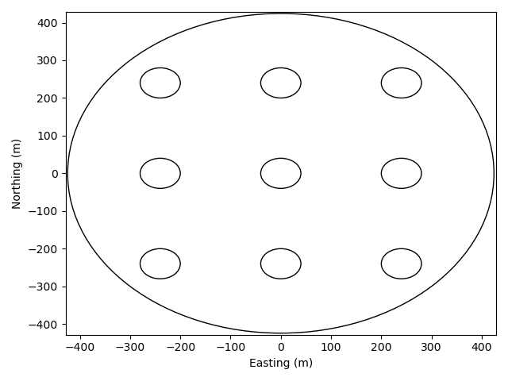
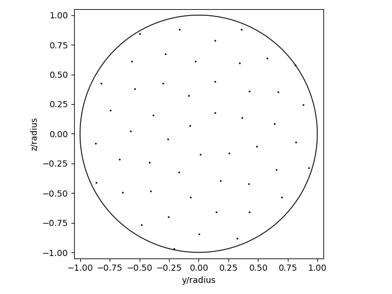
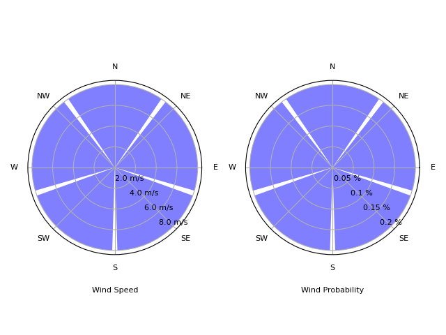
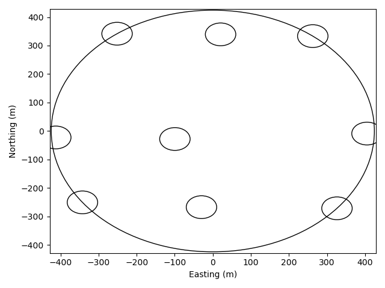
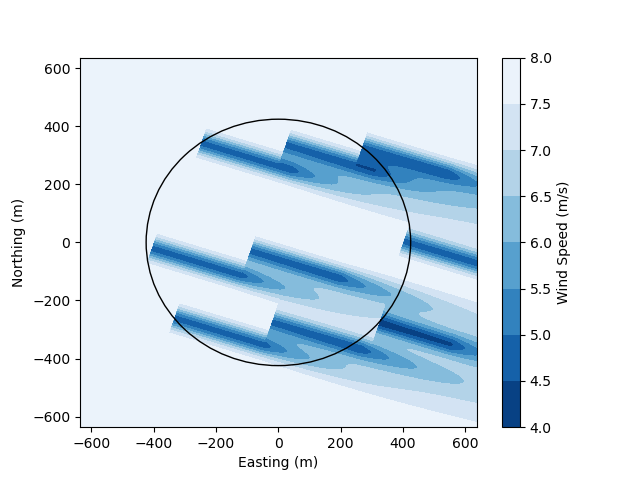

Tutorial
This tutorial covers the basics of FlowFARM. For more specifics refer to the How-to guide.
This tutorial discusses how to do the following with FLOWFarm:
- (1) setting up a problem description
- (2) setting up an analysis model set
- (3) running analyses
- (4) setting up and running an optimization
- (5) calculating and visualizing a flow field
Details for setting up an optimization will depend heavily on the optimization package you are using, your objective, and your design variables. Optimization examples using various packages are provided in the example scripts located in the test directory.
(1) Setting up the problem description
The problems description involves the physically description of the wind farm, the turbines, and the wind resource. While this tutorial uses the same design across all the wind turbines and mostly equal properties across all wind flow states, all turbines and flow states can be unique.
For API demonstration purposes, we have directly assigned all values. However, values may be loaded from .csv and/or .yaml files.
Set up the running environment
using FLOWFarm; const ff = FLOWFarm
using PyPlot; const plt = PyPlot
using VectorizedRoutines.Matlab: meshgrid
using SNOWInitialize the wind farm design
# set initial turbine x and y locations
turbinex = [-240.0, -240.0, -240.0, 0.0, 0.0, 0.0, 240.0, 240.0, 240.0]
turbiney = [-240.0, 0.0, 240.0, -240.0, 0.0, 240.0, -240.0, 0.0, 240.0]
# get the number of turbines
nturbines = length(turbinex)
# set turbine base heights
turbinez = zeros(nturbines)
# set turbine yaw values
turbineyaw = zeros(nturbines)
# set wind farm boundary parameters in meters (we won't really need this until we optimize)
boundarycenter = [0.0,0.0]
boundaryradius = hypot(300, 300)Initialize wind turbine design
# set turbine design parameters (these values correspond to the Vestas V80 turbine)
rotordiameter = zeros(nturbines) .+ 80.0 # m
hubheight = zeros(nturbines) .+ 70.0 # m
cutinspeed = zeros(nturbines) .+ 4.0 # m/s
cutoutspeed = zeros(nturbines) .+ 25.0 # m/s
ratedspeed = zeros(nturbines) .+ 16.0 # m/s
ratedpower = zeros(nturbines) .+ 2.0E6 # W
generatorefficiency = ones(nturbines)Visualize the wind farm layout
# initialize axis
fig, ax = plt.subplots(1)
# plot layout using FLOWFarm
ff.plotlayout!(ax, turbinex, turbiney, rotordiameter)
# Label the axes
ax.set(xlabel="Easting (m)", ylabel="Northing (m)")
# add farm boundary
circle = matplotlib.patches.Circle((0.0, 0.0), boundaryradius, fill=false, color="k")
ax.add_patch(circle)
# set plot limits
ax.set(xlim=[-boundaryradius, boundaryradius].*1.01, ylim=[-boundaryradius, boundaryradius].*1.01)
Determine how to sample the flow field to determine effective inflow speeds
Rotor swept area sample points are normalized by the rotor radius. These arrays define which which points on the rotor swept area should be used to estimate the effective inflow wind speed for each wind turbine. Values of 0.0 are at the rotor hub, 1.0 is at the blade tip, z is vertical, and y is horizontal. These points track the rotor when yawed. A single sample point will always be placed at the hub. More points can be arranged in either a grid pattern or a sunflower packing pattern with various options. See doc strings for more information.
# get the sample points
nsamplepoints = 50
rotorsamplepointsy, rotorsamplepointsz = ff.rotor_sample_points(nsamplepoints, method="sunflower")
# visualize the sample points
fig, ax = plt.subplots(1)
ff.plotrotorsamplepoints!(ax, rotorsamplepointsy, rotorsamplepointsz)
ax.set(xlabel="y/radius", ylabel="z/radius")[-1.05, 1.05][-1.05, 1.05]
Setting up the wind resource
The wind resource determines the properties of the flowfield at all wind states. A wind state is any combination of wind speed, wind direction, turbulence intensity, etc...
# set flow parameters
windspeed = 8.0 # m/2
airdensity = 1.1716 # kg/m^3
ambientti = 0.1 # %
shearexponent = 0.15
ndirections = 5
winddirections = collect(range(0, 2*pi*(1-1/ndirections), length=ndirections)) # radians
windspeeds = ones(ndirections).*windspeed # m/s
windprobabilities = ones(ndirections).*(1.0/ndirections) # %
ambienttis = ones(ndirections).*ambientti # %
measurementheight = ones(ndirections).*hubheight[1] # m
# initialize the wind shear model
windshearmodel = ff.PowerLawWindShear(shearexponent)
# initialize the wind resource definition
windresource = ff.DiscretizedWindResource(winddirections, windspeeds, windprobabilities,
measurementheight, airdensity, ambienttis, windshearmodel)
# visualize the wind resource
ff.plotwindresource!(windresource)
(2) Setting up the analysis models
A model set requires a Wake Deficit Model, Wake Deflection Model, Wake Combination Model, and a Local Turbulence Intensity Model. There are several options for each model type. To facilitate research studies, any of the models in each type can be used with any of the models in any other type. However, behavior is not guaranteed. It is recommended that common, validated, model combinations be used in most cases.
Model types and options are:
- Deficit Models: JensenTopHat, JensenCosine, MultiZone, GaussOriginal, GaussYaw, GaussYawVariableSpread, GaussSimple
- Deflection Models: GaussYawDeflection, GaussYawVariableSpreadDeflection, JiminezYawDeflection, MultizoneDeflection
- Combination Models: LinearFreestreamSuperposition, SumOfSquaresFreestreamSuperposition SumOfSquaresLocalVelocitySuperposition, LinearLocalVelocitySuperposition
- Turbulence Models: LocalTIModelNoLocalTI, LocalTIModelMaxTI
The model set can be set up as follows:
Initialize power model (this is a simple power model based only on turbine design and is not very accurate. For examples on how to use more accurate power models, look at the example optimization scripts)
powermodel = ff.PowerModelPowerCurveCubic()FLOWFarm.PowerModelPowerCurveCubic{Int64}(2)The user can define different power models for different wind turbines, but here we use the same power model for every turbine. The initialization of the power_models vector is important for optmization using algorithmic differentiation via the ForwardDiff.jl package.
powermodels = Vector{typeof(powermodel)}(undef, nturbines)
for i = 1:nturbines
powermodels[i] = powermodel
endInitialize thrust model(s). The user can provide a complete thrust curve. See the example scripts for details on initializing them. The initialization of the ct models vector is important for optmization using algorithmic differentiation via the ForwardDiff.jl package.
ctmodel = ff.ThrustModelConstantCt(0.65)
ctmodels = Vector{typeof(ctmodel)}(undef, nturbines)
for i = 1:nturbines
ctmodels[i] = ctmodel
endSet up wake and related models. Here we will use the default values provided in FLOWFarm. However, it is important to use the correct model parameters. More information and references are provided in the doc strings attached to each model.
The wake deficit model predicts the impact of wind turbines wake on the wind speed.
wakedeficitmodel = ff.GaussYawVariableSpread()FLOWFarm.GaussYawVariableSpread{Float64, Vector{Float64}}(2.32, 0.154, 0.3837, 0.003678, [1.0])The wake deflection model predicts the cross-wind location of the center of a wind turbine wake.
wakedeflectionmodel = ff.GaussYawDeflection()FLOWFarm.GaussYawDeflection{Float64}(0.022, 0.022, 2.32, 0.154)The wake combination model defines how the predicted deficits in each wake should be combined to predict the total deficit at a point
wakecombinationmodel = ff.LinearLocalVelocitySuperposition()FLOWFarm.LinearLocalVelocitySuperposition()The local turbulence intensity models can be used to estimate the local turbulence intensity at each wind turbine or point to provide more accurate input information to the wake and deflection models if applicable.
localtimodel = ff.LocalTIModelMaxTI()FLOWFarm.LocalTIModelMaxTI{Float64}(2.32, 0.154, 0.3837, 0.003678)Initialize model set. This is just a convenience container for the analysis models.
modelset = ff.WindFarmModelSet(wakedeficitmodel, wakedeflectionmodel, wakecombinationmodel, localtimodel)(3) Running the analysis
Now that the wind farm and analysis models have been defined, we can calculate AEP. The output is in Watt-hours.
aep = ff.calculate_aep(turbinex, turbiney, turbinez, rotordiameter,
hubheight, turbineyaw, ctmodels, generatorefficiency, cutinspeed,
cutoutspeed, ratedspeed, ratedpower, windresource, powermodels, modelset,
rotor_sample_points_y=rotorsamplepointsy, rotor_sample_points_z=rotorsamplepointsz)4.178200619606954e9We can also get the AEP in each direction using the following.
state_aeps = ff.calculate_state_aeps(turbinex, turbiney, turbinez, rotordiameter,
hubheight, turbineyaw, ctmodels, generatorefficiency, cutinspeed,
cutoutspeed, ratedspeed, ratedpower, windresource, powermodels, modelset,
rotor_sample_points_y=rotorsamplepointsy, rotor_sample_points_z=rotorsamplepointsz,
hours_per_year=365.25*24.0, weighted=true)5-element Vector{Float64}:
4.109270217912331e8
9.83447956684525e8
8.989939321086268e8
8.93449601481917e8
9.913821075406522e8If we instead set weighted=false then we would get the power in each direction in Watts.
If we want to get the individual turbine powers in each directions, we use the following.
turbine_powers_by_direction = ff.calculate_state_turbine_powers(turbinex, turbiney, turbinez, rotordiameter,
hubheight, turbineyaw, ctmodels, generatorefficiency, cutinspeed,
cutoutspeed, ratedspeed, ratedpower, windresource, powermodels, modelset,
rotor_sample_points_y=rotorsamplepointsy, rotor_sample_points_z=rotorsamplepointsz)5×9 Matrix{Float64}:
2991.51 3513.44 71624.0 2991.51 … 2991.51 3513.44 71624.0
51075.3 51075.3 61087.2 60944.4 71624.0 71624.0 71624.0
71624.0 41508.9 35766.9 71624.0 71624.0 71622.8 71622.8
71624.0 71623.1 71623.1 71624.0 71624.0 40496.1 35291.0
71624.0 71624.0 71624.0 61896.0 51458.3 51458.3 61991.5The output shows each turbine power in an array that is ndirections by nturbines.
(4) setting up and running an optimization
FLOWFarm is specifically designed for efficient optimization using gradient-based optimization methods. Besides the steps outlined above, we need to define the following before we can run and optimization:
- (1) Optimization related variables
- (1) A container for non-differentiated parameters
- (2) Objective function
- (3) Constraint function(s)
- (4) Optimization tool specific items
In this tutorial we demonstrate optimizing using the IPOPT algorithms via SNOW.jl for simplicity.
First, set up optimization related variables. We will have two constraints, one to keep turbines from getting too close to each other (spacing), and the other to keep turbines inside the desired area (boundary). FLOWFarm provides several different ways of handling boundary constraints, including concave boundaries. However, for this tutorial we will use a simple circular boundary.
# scale objective derivatives to be between 0 and 1
objectivescale = 1E-6
# scale boundary constraint derivatives to be between 0 and 1
constraintscaleboundary = 1.0E-3
# scale spacing constraint derivatives to be between 0 and 1
constraintscalespacing = 1.0
# set the minimum spacing between turbines
minimumspacing = 160.0Next, set up a container for non-differentiated parameters
# set up a struct for use in optimization functions
mutable struct params_struct{}
modelset
rotorsamplepointsy
rotorsamplepointsz
turbinez
ambientti
rotordiameter
boundarycenter
boundaryradius
objectivescale
constraintscaleboundary
constraintscalespacing
minimumspacing
hubheight
turbineyaw
ctmodels
generatorefficiency
cutinspeed
cutoutspeed
ratedspeed
ratedpower
windresource
powermodels
end
params = params_struct(modelset, rotorsamplepointsy, rotorsamplepointsz, turbinez, ambientti,
rotordiameter, boundarycenter, boundaryradius, objectivescale, constraintscaleboundary,
constraintscalespacing, minimumspacing, hubheight, turbineyaw,
ctmodels, generatorefficiency, cutinspeed, cutoutspeed, ratedspeed, ratedpower,
windresource, powermodels)Now we are ready to set up wrapper functions for the objective and constraints.
# set up boundary constraint wrapper function
function boundary_wrapper(x, params)
# include relevant params
boundarycenter = params.boundarycenter
boundaryradius = params.boundaryradius
constraintscaleboundary = params.constraintscaleboundary
# find the number of turbines
nturbines = Int(length(x)/2)
# extract x and y locations of turbines from design variables vector
turbinex = x[1:nturbines]
turbiney = x[nturbines+1:end]
# get and return boundary distances
return ff.circle_boundary(boundarycenter, boundaryradius, turbinex, turbiney).*constraintscaleboundary
end
# set up spacing constraint wrapper function
function spacing_wrapper(x, params)
# include relevant params
rotordiameter = params.rotordiameter
constraintscalespacing = params.constraintscalespacing
minimumspacing = params.minimumspacing
# get number of turbines
nturbines = Int(length(x)/2)
# extract x and y locations of turbines from design variables vector
turbinex = x[1:nturbines]
turbiney = x[nturbines+1:end]
# get and return spacing distances
return constraintscalespacing.*(minimumspacing .- ff.turbine_spacing(turbinex,turbiney))
end
# set up aep wrapper function
function aep_wrapper(x, params)
# include relevant params
turbinez = params.turbinez
rotordiameter = params.rotordiameter
hubheight = params.hubheight
turbineyaw =params.turbineyaw
ctmodels = params.ctmodels
generatorefficiency = params.generatorefficiency
cutinspeed = params.cutinspeed
cutoutspeed = params.cutoutspeed
ratedspeed = params.ratedspeed
ratedpower = params.ratedpower
windresource = params.windresource
powermodels = params.powermodels
modelset = params.modelset
rotorsamplepointsy = params.rotorsamplepointsy
rotorsamplepointsz = params.rotorsamplepointsy
objectivescale = params.objectivescale
# get number of turbines
nturbines = Int(length(x)/2)
# extract x and y locations of turbines from design variables vector
turbinex = x[1:nturbines]
turbiney = x[nturbines+1:end]
# calculate AEP
aep = objectivescale*ff.calculate_aep(turbinex, turbiney, turbinez, rotordiameter,
hubheight, turbineyaw, ctmodels, generatorefficiency, cutinspeed,
cutoutspeed, ratedspeed, ratedpower, windresource, powermodels, modelset,
rotor_sample_points_y=rotorsamplepointsy,rotor_sample_points_z=rotorsamplepointsz)
# return the AEP
return aep
end
# set up optimization problem wrapper function
function wind_farm_opt!(g, x, params)
nturbines = Int(length(x)/2)
# calculate spacing constraint value and jacobian
spacing_con = spacing_wrapper(x, params)
# calculate boundary constraint and jacobian
boundary_con = boundary_wrapper(x, params)
# combine constaint values and jacobians into overall constaint value and jacobian arrays
g[1:(end-nturbines)] = spacing_con[:]
g[end-nturbines+1:end] = boundary_con[:]
# calculate the objective function and jacobian (negative sign in order to maximize AEP)
obj = -aep_wrapper(x, params)[1]
return obj
endBecause the optimizer will need to call the objective function without knowing about the params, we need to set up a method that will know the params values by default.
# generate objective function wrapper
obj_func!(g, x) = wind_farm_opt!(g, x, params)obj_func! (generic function with 1 method)Next we set up the optimizer.
# initialize design variable vector
x0 = [copy(turbinex);copy(turbiney)]
# set general lower and upper bounds for design variables
lx = zeros(length(x0)) .- boundaryradius
ux = zeros(length(x0)) .+ boundaryradius
# set general lower and upper bounds for constraints
ng = Int(nturbines + (nturbines)*(nturbines - 1)/2)
lg = [-Inf*ones(Int((nturbines)*(nturbines - 1)/2)); -Inf*ones(nturbines)]
ug = [zeros(Int((nturbines)*(nturbines - 1)/2)); zeros(nturbines)]
# IPOPT options
ip_options = Dict(
"max_iter" => 50,
"tol" => 1e-6
)
solver = IPOPT(ip_options)
# if using SNOPT, you can do the following instead:
# snopt_opt = Dict(
# "Derivative option" => 1,
# "Major optimality tolerance" => 1e-4,
# )
# solver = SNOPT(options=snopt_opt)
# initialize SNOW options
options = Options(solver=solver, derivatives=ForwardAD()) # choose AD derivativesNow that the optimizer is set up, we are ready to optimize and check the results.
# optimize
t1 = time() # start time
xopt, fopt, info, out = minimize(obj_func!, x0, ng, lx, ux, lg, ug, options)
t2 = time() # end time
clk = t2-t1 # approximate run time
# get final aep
aepfinal = -fopt/objectivescale
# print optimization results
println("Finished in : ", clk, " (s)")
println("info: ", info)
println("Initial AEP: ", aep)
println("Final AEP: ", aepfinal)
println("AEP improvement (%) = ", 100*(aepfinal - aep)/aep)
# extract final turbine locations
turbinexopt = copy(xopt[1:nturbines])
turbineyopt = copy(xopt[nturbines+1:end])
# initialize figure and axes object
fig, ax = plt.subplots(1)
# plot layout using FLOWFarm
ff.plotlayout!(ax, turbinexopt, turbineyopt, rotordiameter)
# label the axes
ax.set(xlabel="Easting (m)", ylabel="Northing (m)")
# and the wind farm boundary
circle = matplotlib.patches.Circle((0.0, 0.0), boundaryradius, fill=false, color="k")
ax.add_patch(circle)
# set limits on the plot region
ax.set(xlim=[-boundaryradius, boundaryradius].*1.01, ylim=[-boundaryradius, boundaryradius].*1.01)
******************************************************************************
This program contains Ipopt, a library for large-scale nonlinear optimization.
Ipopt is released as open source code under the Eclipse Public License (EPL).
For more information visit https://github.com/coin-or/Ipopt
******************************************************************************
This is Ipopt version 3.13.4, running with linear solver mumps.
NOTE: Other linear solvers might be more efficient (see Ipopt documentation).
Number of nonzeros in equality constraint Jacobian...: 0
Number of nonzeros in inequality constraint Jacobian.: 810
Number of nonzeros in Lagrangian Hessian.............: 0
Total number of variables............................: 18
variables with only lower bounds: 0
variables with lower and upper bounds: 18
variables with only upper bounds: 0
Total number of equality constraints.................: 0
Total number of inequality constraints...............: 45
inequality constraints with only lower bounds: 0
inequality constraints with lower and upper bounds: 0
inequality constraints with only upper bounds: 45
iter objective inf_pr inf_du lg(mu) ||d|| lg(rg) alpha_du alpha_pr ls
0 -4.2690715e+03 0.00e+00 1.85e+00 0.0 0.00e+00 - 0.00e+00 0.00e+00 0
1 -4.2983414e+03 0.00e+00 2.87e+00 0.8 5.99e+00 - 9.91e-01 1.00e+00f 1
2 -4.5670275e+03 0.00e+00 2.51e+00 0.6 1.72e+02 - 9.92e-01 1.00e+00f 1
3 -4.6033995e+03 0.00e+00 3.21e+00 -5.4 5.83e+02 - 3.34e-01 1.62e-01f 2
4 -4.7940012e+03 0.00e+00 3.06e+00 -5.6 4.40e+01 - 7.78e-01 1.00e+00f 1
5 -4.8699840e+03 0.00e+00 2.28e+00 -1.1 4.66e+01 - 9.87e-01 1.00e+00f 1
6 -4.9302760e+03 4.83e-01 1.67e+00 -1.6 7.29e+01 - 9.93e-01 4.08e-01f 1
7 -4.9390324e+03 5.64e-01 1.61e+00 -2.1 9.13e+01 - 9.73e-01 6.45e-02f 1
8 -4.9811397e+03 5.04e-01 7.99e-01 -2.4 1.55e+02 - 1.00e+00 2.15e-01f 1
9 -4.9658416e+03 2.20e-01 1.34e+00 -0.7 2.80e+01 - 1.00e+00 6.66e-01h 1
iter objective inf_pr inf_du lg(mu) ||d|| lg(rg) alpha_du alpha_pr ls
10 -4.9862618e+03 7.78e-02 4.11e-01 -1.6 1.40e+01 - 1.00e+00 8.17e-01f 1
11 -4.9888196e+03 3.38e-03 3.51e-01 -3.0 4.77e+00 - 1.00e+00 9.94e-01f 1
12 -4.9963483e+03 1.10e-03 9.52e-01 -3.8 1.10e+01 - 1.00e+00 1.00e+00f 1
13 -5.0204862e+03 3.55e-03 7.07e-01 -4.7 2.01e+01 - 1.00e+00 1.00e+00f 1
14 -5.0197437e+03 6.26e-02 1.01e+00 -5.5 1.75e+01 - 1.00e+00 1.00e+00h 1
15 -5.0325484e+03 5.70e-02 3.63e-01 -5.5 1.07e+01 - 1.00e+00 1.00e+00f 1
16 -5.0347812e+03 1.31e-03 4.28e-01 -6.2 9.62e+00 - 1.00e+00 1.00e+00f 1
17 -5.0353058e+03 1.15e-02 3.83e-01 -6.5 1.26e+01 - 1.00e+00 1.00e+00f 1
18 -5.0378732e+03 7.52e-03 1.89e-01 -7.6 7.00e+00 - 1.00e+00 1.00e+00f 1
19 -5.0398076e+03 1.50e-02 2.27e-01 -8.9 6.87e+00 - 1.00e+00 1.00e+00f 1
iter objective inf_pr inf_du lg(mu) ||d|| lg(rg) alpha_du alpha_pr ls
20 -5.0409120e+03 5.01e-01 2.09e+00 -8.1 1.60e+03 - 1.00e+00 2.24e-02f 3
21 -4.9689479e+03 5.12e-02 2.93e+00 -8.6 9.62e+01 - 1.00e+00 8.04e-01H 1
22 -5.0805620e+03 1.17e+00 1.54e+00 -8.7 5.83e+01 - 5.30e-01 1.00e+00f 1
23 -5.1219882e+03 1.45e-01 1.39e+00 -9.0 3.18e+01 - 1.00e+00 1.00e+00f 1
24 -5.1259115e+03 1.14e-02 1.22e+00 -9.4 7.24e+01 - 1.00e+00 3.68e-01F 1
25 -5.1504998e+03 1.16e-01 8.18e-01 -9.1 1.21e+01 - 1.00e+00 1.00e+00f 1
26 -5.1568277e+03 2.14e-01 1.32e+00 -7.2 2.39e+01 - 2.09e-01 1.00e+00f 1
27 -5.1700551e+03 9.36e-03 4.33e-01 -5.8 1.19e+01 - 4.30e-04 1.00e+00f 1
28 -5.1739467e+03 3.07e-02 4.73e-01 -5.7 2.11e+01 - 1.00e+00 1.00e+00f 1
29 -5.1767776e+03 2.01e-02 2.65e-01 -3.7 1.47e+01 - 1.00e+00 3.86e-01f 1
iter objective inf_pr inf_du lg(mu) ||d|| lg(rg) alpha_du alpha_pr ls
30 -5.1799542e+03 1.21e-01 4.13e-01 -2.7 1.39e+01 - 1.00e+00 1.00e+00f 1
31 -5.1822685e+03 2.06e-02 2.47e-01 -1.5 1.96e+01 - 1.00e+00 8.37e-01f 1
32 -5.1552597e+03 0.00e+00 1.20e+00 -2.2 3.57e+01 - 9.88e-01 1.00e+00H 1
33 -5.1829481e+03 1.02e-01 1.06e-01 -1.6 3.26e+01 - 1.00e+00 1.00e+00f 1
34 -5.1823788e+03 1.79e-02 3.16e-01 -2.2 6.82e+00 - 1.00e+00 9.98e-01h 1
35 -5.1830167e+03 1.42e-03 3.77e-01 -3.1 2.88e+00 - 1.00e+00 9.82e-01f 1
36 -5.1834635e+03 2.23e-03 7.79e-02 -4.6 3.16e+00 - 1.00e+00 1.00e+00f 1
37 -5.1835175e+03 5.12e-04 1.83e-02 -4.3 1.55e+00 - 1.00e+00 1.00e+00h 1
38 -5.1834300e+03 3.72e-06 1.21e-01 -5.8 2.60e+00 - 1.00e+00 1.00e+00H 1
39 -5.1835241e+03 1.29e-04 4.67e-02 -7.1 1.38e+00 - 1.00e+00 9.91e-01f 1
iter objective inf_pr inf_du lg(mu) ||d|| lg(rg) alpha_du alpha_pr ls
40 -5.1835518e+03 2.44e-04 1.95e-02 -8.0 9.13e-01 - 1.00e+00 1.00e+00h 1
41 -5.1835529e+03 1.11e-05 8.86e-03 -9.9 2.03e-01 - 1.00e+00 1.00e+00h 1
42 -5.1835544e+03 7.10e-06 8.68e-03 -11.0 1.30e-01 - 1.00e+00 1.00e+00h 1
43 -5.1835551e+03 1.02e-05 6.17e-03 -11.0 1.23e-01 - 1.00e+00 1.00e+00h 1
44 -5.1835553e+03 7.12e-06 6.93e-03 -11.0 1.02e-01 - 1.00e+00 1.00e+00h 1
45 -5.1835555e+03 1.21e-06 3.40e-03 -11.0 9.27e-02 - 1.00e+00 1.00e+00h 1
46 -5.1835555e+03 1.20e-06 2.93e-03 -11.0 5.06e-02 - 1.00e+00 1.00e+00h 1
47 -5.1835556e+03 1.02e-07 2.84e-03 -11.0 4.90e-02 - 1.00e+00 1.00e+00h 1
48 -5.1835556e+03 1.69e-07 6.16e-04 -11.0 2.24e-02 - 1.00e+00 1.00e+00h 1
49 -5.1835556e+03 2.96e-08 1.10e-04 -11.0 7.45e-03 - 1.00e+00 1.00e+00h 1
iter objective inf_pr inf_du lg(mu) ||d|| lg(rg) alpha_du alpha_pr ls
50 -5.1835556e+03 3.48e-09 3.83e-05 -11.0 3.37e-03 - 1.00e+00 1.00e+00h 1
Number of Iterations....: 50
(scaled) (unscaled)
Objective...............: -5.1835556123372808e+03 -5.1835556123372808e+03
Dual infeasibility......: 3.8327720926694048e-05 3.8327720926694048e-05
Constraint violation....: 3.4840374812483783e-09 3.4840374812483783e-09
Complementarity.........: 9.9999999999999768e-12 9.9999999999999768e-12
Overall NLP error.......: 3.8327720926694048e-05 3.8327720926694048e-05
Number of objective function evaluations = 62
Number of objective gradient evaluations = 51
Number of equality constraint evaluations = 0
Number of inequality constraint evaluations = 62
Number of equality constraint Jacobian evaluations = 0
Number of inequality constraint Jacobian evaluations = 51
Number of Lagrangian Hessian evaluations = 0
Total CPU secs in IPOPT (w/o function evaluations) = 7.857
Total CPU secs in NLP function evaluations = 0.794
EXIT: Maximum Number of Iterations Exceeded.
Finished in : 9.845233917236328 (s)
info: Maximum_Iterations_Exceeded
Initial AEP: 4.178200619606954e9
Final AEP: 5.183555612337281e9
AEP improvement (%) = 24.061912872553773
(5) Calculating and visualizing a flow field
It is helpful to visualize the whole flow-field, not just the turbine powers. Here we will visualize the flow field for a 2D horizontal cross-section at the hub height. FLOWFarm is capable of generating flow fields in 1D, 2D, and 3D.
# define how many points should be in the flow field
xres = 1000
yres = 1000
zres = 1
# define flow field domain
maxy = boundaryradius*1.5
miny = -boundaryradius*1.5
maxx = boundaryradius*1.5
minx = -boundaryradius*1.5
# set up point grid for flow field
xrange = minx:(maxx-minx)/xres:maxx
yrange = miny:(maxy-miny)/yres:maxy
zrange = hubheight[1]
# run flowfarm
ffvelocities = ff.calculate_flow_field(xrange, yrange, zrange,
modelset, turbinexopt, turbineyopt, turbinez, turbineyaw,
rotordiameter, hubheight, ctmodels, rotorsamplepointsy, rotorsamplepointsz,
windresource, wind_farm_state_id=5)
# visualize
# initialize figure
fig, ax = plt.subplots(1)
# generate meshgrid from ranges for passing to pyplots
xg, yg = meshgrid(collect(xrange), collect(yrange))
# plot as filled contours
cs = ax.contourf(xg, yg, ffvelocities[1,:,:], cmap="Blues_r")
# add colorbar
cbar = ax.figure.colorbar(cs, ax=ax, label="Wind Speed (m/s)", orientation="vertical")
# label the axes
ax.set(xlabel="Easting (m)", ylabel="Northing (m)")
# add the wind farm boundary
circle = matplotlib.patches.Circle((0.0, 0.0), boundaryradius, fill=false, color="k")
ax.add_patch(circle)